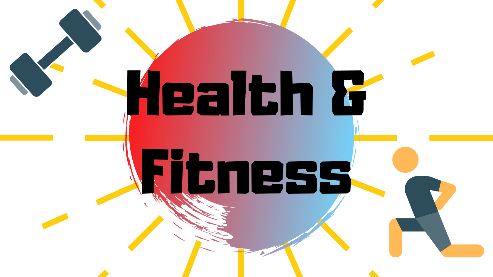

Health and Fitness
Health is wealth, rightly said. Good health is an essential aspect of human life. Fitness is the cornerstone of good health. The best way of living a good life is by maintaining good health and fitness. One can live life to the fullest only by maintaining good health and fitness. Good health and fitness imply both mental and physical well-being. The basic way to good health and fitness is doing workouts. We should always remember that a healthy mind can only be gained by being healthy.
Good health can be obtained by doing workouts and by getting fit!! Good Health doesen't mean that if there's nothing wrong with you then u are at good health. Good Health means that you are at the best u can be. Good Health also includes your brain. It is not something which u can develop overnight, it takes time but the end result is worth it. So all this boringness aside all u need to know is: Good Health = Good life! Need I say anything else? That's what I thought!

Fitness is one of the most essential parts of life! Like I mentioned above, fitness is the path to good health and good health = good life. So, fitness is the path to good life basically. Now, fitness is one of the most difficult yet rewarding part of life. Fitness requires a LOT of dedication. But, it pays off. The rewards are amazing. Fun Fact!! = For every pound of muscle gained, the body burns 50 extra calories every day. Like, that's soo cool!!!!
1) A bowl of dal = 132 Calories!!
2) Chapati = 120 Calories!!
3) Curd = 54 Calories!!
4) Cucumber = 34 Calories!!
5) A glass of milk = 114 Calories!!
6) Egg = 50-100 Calories!! Depends on what type of egg u eat!
7) Porridge/Dalia = 125 Calories!! Per Serving!
8) Quinoa = 222 Calories!!
9) A slice of cake = 389 Calories!!
10) A FULL cake = A whooping 6,463 Calories!!
11) A full plate of rice = 272 Calories!!
12) A serving of maggi = 445 Calories!!
13) 10 Strawberries = 60 Calories!! 1 strawberry is only 6 Calories!
14) An orange = 66 Calories!!
15) A Mango = 99 Calories!!
16) 10 Seedless Grapes = 30 Calories!! 1 Seedless Grape is only 3 Calories!
17) A Apple = 95 Calories!!
18) A slice of bread with butter = 165 Calories!!
19) A bowl of pasta = 250-300 Calories!!
20) A subway = 400-600 Calories!! Mostly near 600!
Here are some links for getting fit!!
1) 30 MIN PUMPING CARDIO WORKOUT | Full Body - No Equipment at Home
5) 30 Minute Low Impact HIIT Workout [NO Jumping //NO Equipment]
And Here are some links for eating healthy!! (70% of fat loss is diet!!)
1) 7 High Protein Veg BREAKFAST RECIPES for Weight Loss | By GunjanShouts